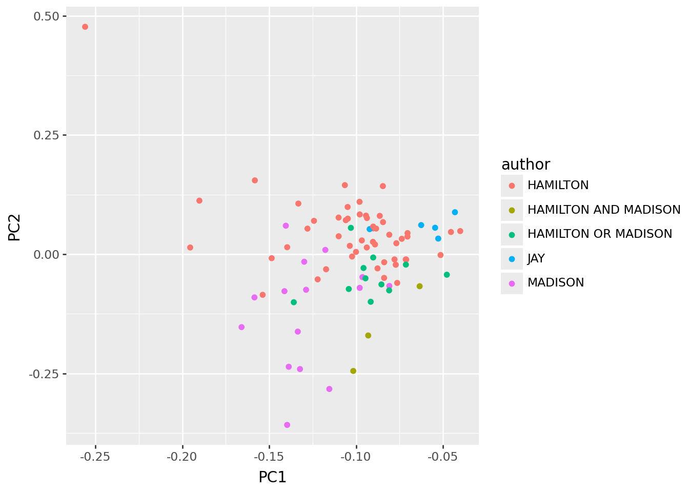
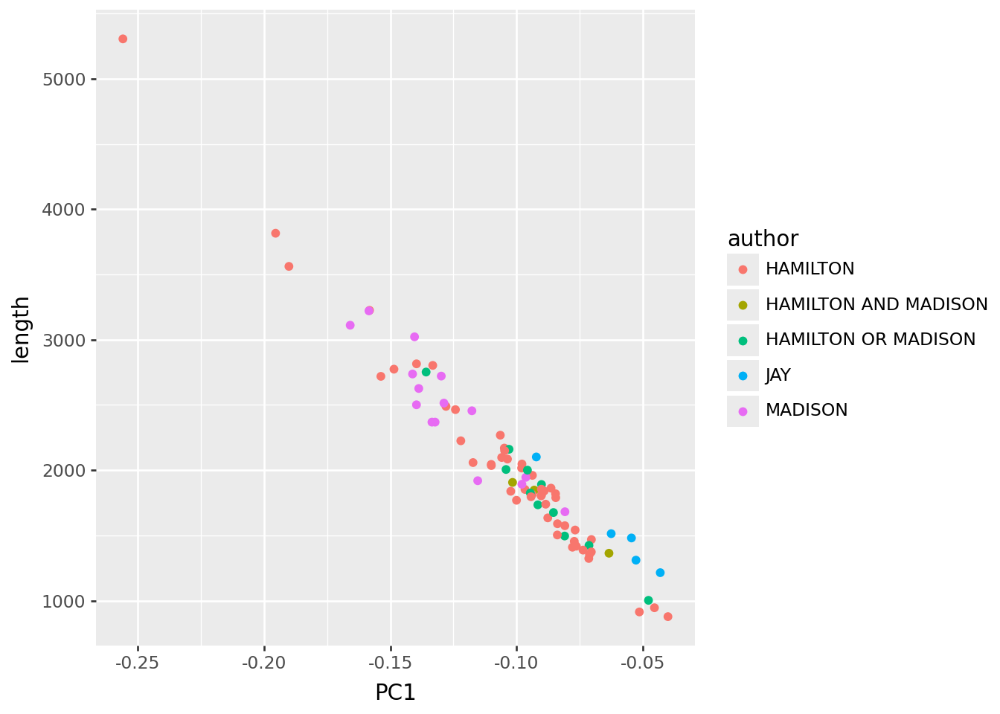
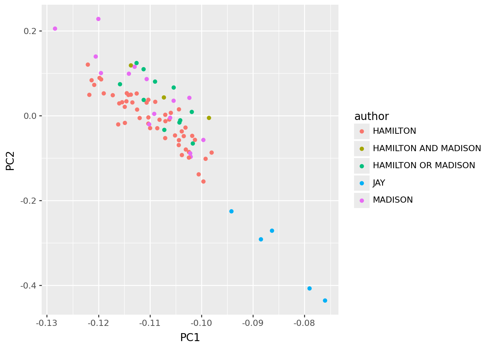
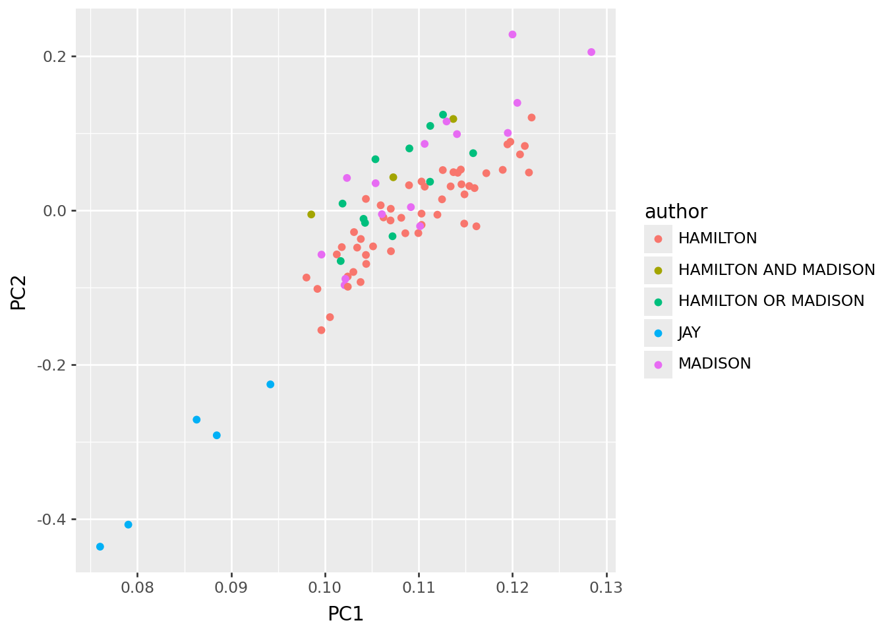
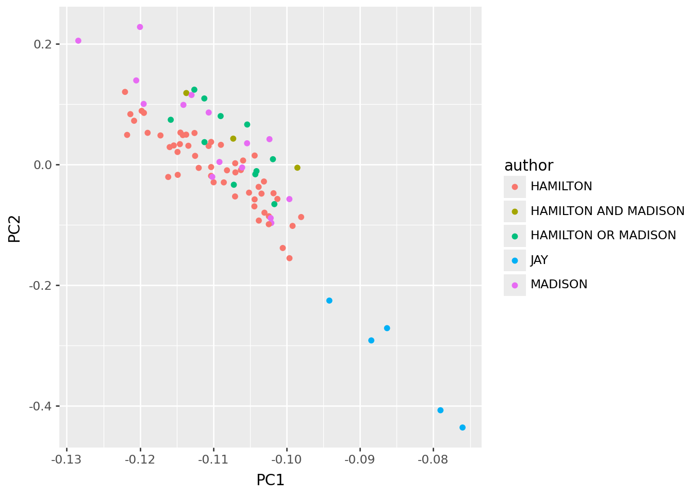

import json, re
import pandas as pd
import numpy as np
import plotnine as p9
from collections import Counter
import scipyExercise: Federalist papers
Hands on with some text: the federalist papers
We’ve had a look at doing dimension reduction with the federalist papers. Today, you’re going to continue with this. The main skills here are being able to identify and articulate:
- What is this dimension reduction telling us?
- Is that what I want, and if not, what do I do about it?
This is important because there’s lots of different dimension reduction techniques, and data pre-processing steps that can be important, and to be effective with these you need to be able to figure these things out.
Setup
The data
As before, you can get the data from this file: data/federalist.json. It is a text file, where each line is a JSON entry, containing: author, text, date, title, paper_id, and venue.
Here’s the code we developed in class to read in and clean the data:
with open("data/federalist.json", 'r') as f:
text = [json.loads(line) for line in f]
info = pd.DataFrame(
{ k: [t[k] for t in text] for k in ['author', 'date', 'title', 'paper_id', 'venue']}
).assign(length = [len(t['text'].split(" ")) for t in text])
def clean(t):
t = re.sub("[\n\t]", " ", t).lower()
t = re.sub("[^a-z ]", "", t)
t = re.sub(" *", " ", t)
t = t.strip()
return t
# the first word is "empty string" for some reason; we drop it
words = np.unique(" ".join([clean(t['text']) for t in text]).split(" "))
def tabwords(x, words):
d = Counter(x.split(" "))
out = np.array([d[w] for w in words])
return out
wordmat = np.array([tabwords(clean(t['text']), words) for t in text])PCA
Here’s a helper function to do PCA with SVD:
def svd_pca(x, words, num_pcs=4):
pcs, evals, evecs = scipy.sparse.linalg.svds(x, k=num_pcs)
eord = np.argsort(evals)[::-1]
evals = evals[eord]
evecs = evecs[eord,:]
pcs = pcs[:,eord]
pc_df = pd.concat([
info,
pd.DataFrame({f"PC{k+1}" : pcs[:,k] for k in range(pcs.shape[1])})
], axis=1)
loadings = pd.DataFrame(evecs.T, columns=[f"PC{k+1}" for k in range(pcs.shape[1])], index=words)
return pc_df, loadings, evalsNo normalization
We first decided to normalize rows, so that the matrix we’re using has “what proportion of the words in this essay were w” for each word w, rather than a total count: John Jay fell out low on PC1.
x = wordmat
pc_df, loadings, _ = svd_pca(x, words)
p9.ggplot(pc_df, p9.aes(x="PC1", y="PC2", color="author")) + p9.geom_point()
It’s ‘length’.
Interpretation:
PC1 tells us mostly about “length of the essay”. This is maybe a good thing to know (eg Hamilton wrote the longest one) but not very interesting or relevant in this context.
p9.ggplot(pc_df, p9.aes(x="PC1", y="length", color="author")) + p9.geom_point()
Normalize rows
So, to remove this, we decided to normalize* rows, so that the matrix we’re using has “what proportion of the words in this essay were w” for each word w, rather than a total count. This should remove the effect of length. In the resulting PCs, John Jay falls out low on PC1.
Note: “normalize” sometimes means a specific thing (“subtract mean and divide by SD”) but that’s not how I’m using it here.
x = wordmat / np.sum(wordmat, axis=1)[:, np.newaxis]
pc_df, loadings, _ = svd_pca(x, words)
p9.ggplot(pc_df, p9.aes(x="PC1", y="PC2", color="author")) + p9.geom_point()
What’s going on with this?
Assignment:
Look at the loadings below, and interpret this in terms of “which words does Jay tend to use more, and which less”.
Compute the frequency of each word (i.e., how often is it used in the essays), and add this to the
loadingsdata frame. Plot this frequency against PC1. Does this help your conclusion?
loadings.sort_values("PC1").head(n=30)| PC1 | PC2 | PC3 | PC4 | |
|---|---|---|---|---|
| the | -0.700552 | 0.502133 | -0.260069 | 0.151452 |
| of | -0.463561 | -0.052683 | 0.192531 | -0.550749 |
| to | -0.278768 | -0.303049 | 0.371933 | 0.219963 |
| and | -0.198558 | -0.574392 | -0.567745 | -0.090721 |
| in | -0.172187 | -0.065247 | 0.135144 | -0.018245 |
| a | -0.154668 | -0.063259 | 0.265856 | -0.229460 |
| be | -0.152968 | -0.098389 | 0.228273 | 0.434183 |
| that | -0.108419 | -0.142100 | 0.088568 | 0.154681 |
| it | -0.098899 | -0.113826 | 0.037923 | 0.144054 |
| is | -0.081578 | 0.028194 | 0.020456 | 0.029828 |
| which | -0.080506 | -0.027158 | 0.001628 | 0.007218 |
| as | -0.067168 | -0.052500 | -0.027180 | 0.131759 |
| by | -0.065270 | -0.019157 | -0.158868 | 0.020901 |
| this | -0.054550 | -0.003462 | 0.078910 | -0.053661 |
| would | -0.052005 | -0.151124 | 0.191501 | -0.094948 |
| will | -0.050378 | -0.051474 | 0.017928 | 0.287278 |
| or | -0.048687 | -0.118973 | -0.010818 | 0.041954 |
| for | -0.048427 | -0.056080 | 0.014423 | 0.043311 |
| have | -0.048351 | -0.030898 | 0.003982 | -0.044369 |
| not | -0.047144 | -0.063963 | 0.008597 | 0.055862 |
| their | -0.043492 | -0.130353 | -0.110207 | 0.036838 |
| with | -0.041636 | -0.057788 | -0.042652 | -0.047109 |
| from | -0.041182 | -0.069344 | -0.006991 | -0.001865 |
| are | -0.039543 | -0.056151 | -0.048076 | 0.036129 |
| on | -0.036625 | 0.017005 | -0.143751 | 0.049852 |
| an | -0.036602 | -0.002410 | 0.086499 | -0.048685 |
| they | -0.035837 | -0.126724 | -0.051232 | 0.023311 |
| government | -0.032737 | -0.017675 | -0.051085 | 0.138948 |
| states | -0.032364 | 0.035431 | -0.007890 | -0.017861 |
| may | -0.031706 | -0.017920 | 0.036224 | 0.081347 |
loadings.sort_values("PC2").tail(n=30)| PC1 | PC2 | PC3 | PC4 | |
|---|---|---|---|---|
| governments | -0.007420 | 0.015225 | -0.024638 | 0.053736 |
| several | -0.006593 | 0.015504 | -0.023241 | 0.009768 |
| house | -0.003628 | 0.016202 | 0.008023 | 0.012220 |
| been | -0.030350 | 0.016609 | 0.012052 | -0.028365 |
| on | -0.036625 | 0.017005 | -0.143751 | 0.049852 |
| no | -0.018600 | 0.019342 | 0.004734 | 0.011664 |
| latter | -0.006247 | 0.019506 | -0.013844 | 0.027717 |
| officers | -0.002963 | 0.019799 | -0.017760 | 0.000983 |
| body | -0.008930 | 0.020112 | 0.036877 | -0.000762 |
| supreme | -0.003590 | 0.020524 | 0.000366 | 0.023719 |
| legislature | -0.007438 | 0.021467 | 0.010761 | 0.005693 |
| court | -0.003566 | 0.021989 | 0.015426 | 0.012389 |
| cases | -0.006167 | 0.023190 | -0.005097 | 0.015210 |
| departments | -0.003326 | 0.024519 | -0.028842 | 0.010199 |
| representatives | -0.008049 | 0.027305 | -0.004503 | 0.039238 |
| is | -0.081578 | 0.028194 | 0.020456 | 0.029828 |
| senate | -0.007586 | 0.031985 | 0.026154 | -0.008064 |
| judiciary | -0.003467 | 0.032131 | -0.029679 | 0.004731 |
| power | -0.024360 | 0.032404 | 0.043495 | 0.000104 |
| state | -0.031641 | 0.034159 | 0.022425 | 0.082636 |
| states | -0.032364 | 0.035431 | -0.007890 | -0.017861 |
| powers | -0.009682 | 0.036378 | -0.073631 | 0.004031 |
| members | -0.009510 | 0.041491 | -0.059899 | -0.014137 |
| authority | -0.011720 | 0.041591 | -0.014066 | 0.002339 |
| department | -0.003544 | 0.043422 | -0.048151 | -0.006345 |
| legislative | -0.008230 | 0.050347 | -0.050330 | -0.002219 |
| federal | -0.013056 | 0.053176 | -0.046269 | 0.087642 |
| constitution | -0.017260 | 0.058498 | -0.038198 | 0.036912 |
| executive | -0.009678 | 0.066208 | -0.047408 | -0.053671 |
| the | -0.700552 | 0.502133 | -0.260069 | 0.151452 |
And also columns
Next, let’s see what happens if we also normalize columns.
Assignment:
- Modify the code below to also subtract the mean from each column (after the row normalization).
- What are the main features of the resulting PCs? Can you explain these?
x = wordmat / np.sum(wordmat, axis=1)[:, np.newaxis]
pc_df, loadings, _ = svd_pca(x, words)
p9.ggplot(pc_df, p9.aes(x="PC1", y="PC2", color="author")) + p9.geom_point()
loadings.sort_values("PC1").head(n=30)| PC1 | PC2 | PC3 | PC4 | |
|---|---|---|---|---|
| quadrate | 0.000014 | -0.000045 | -0.000183 | 0.00002 |
| accessible | 0.000014 | -0.000045 | -0.000183 | 0.00002 |
| wilful | 0.000014 | -0.000045 | -0.000183 | 0.00002 |
| surmount | 0.000014 | -0.000045 | -0.000183 | 0.00002 |
| senseless | 0.000014 | -0.000045 | -0.000183 | 0.00002 |
| indispose | 0.000014 | -0.000045 | -0.000183 | 0.00002 |
| obliging | 0.000014 | -0.000045 | -0.000183 | 0.00002 |
| canon | 0.000014 | -0.000045 | -0.000183 | 0.00002 |
| explore | 0.000014 | -0.000045 | -0.000183 | 0.00002 |
| misapprehensions | 0.000014 | -0.000045 | -0.000183 | 0.00002 |
| discourages | 0.000014 | -0.000045 | -0.000183 | 0.00002 |
| warmest | 0.000014 | -0.000045 | -0.000183 | 0.00002 |
| indisputable | 0.000014 | -0.000045 | -0.000183 | 0.00002 |
| undergoes | 0.000014 | -0.000045 | -0.000183 | 0.00002 |
| corresponded | 0.000014 | -0.000045 | -0.000183 | 0.00002 |
| impolicy | 0.000014 | -0.000045 | -0.000183 | 0.00002 |
| happening | 0.000014 | -0.000045 | -0.000183 | 0.00002 |
| extortion | 0.000014 | -0.000045 | -0.000183 | 0.00002 |
| indicted | 0.000014 | -0.000045 | -0.000183 | 0.00002 |
| signified | 0.000014 | -0.000045 | -0.000183 | 0.00002 |
| requested | 0.000014 | -0.000045 | -0.000183 | 0.00002 |
| recover | 0.000014 | -0.000045 | -0.000183 | 0.00002 |
| signing | 0.000014 | -0.000045 | -0.000183 | 0.00002 |
| request | 0.000014 | -0.000045 | -0.000183 | 0.00002 |
| unaffected | 0.000014 | -0.000045 | -0.000183 | 0.00002 |
| conversations | 0.000014 | -0.000045 | -0.000183 | 0.00002 |
| chancellors | 0.000014 | -0.000045 | -0.000183 | 0.00002 |
| fashioning | 0.000014 | -0.000045 | -0.000183 | 0.00002 |
| sounds | 0.000014 | -0.000045 | -0.000183 | 0.00002 |
| artfully | 0.000014 | -0.000045 | -0.000183 | 0.00002 |
loadings.sort_values("PC2").tail(n=30)| PC1 | PC2 | PC3 | PC4 | |
|---|---|---|---|---|
| governments | 0.007420 | 0.015225 | 0.024638 | 0.053736 |
| several | 0.006593 | 0.015504 | 0.023241 | 0.009768 |
| house | 0.003628 | 0.016202 | -0.008023 | 0.012220 |
| been | 0.030350 | 0.016609 | -0.012052 | -0.028365 |
| on | 0.036625 | 0.017005 | 0.143751 | 0.049852 |
| no | 0.018600 | 0.019342 | -0.004734 | 0.011664 |
| latter | 0.006247 | 0.019506 | 0.013844 | 0.027717 |
| officers | 0.002963 | 0.019799 | 0.017760 | 0.000983 |
| body | 0.008930 | 0.020112 | -0.036877 | -0.000762 |
| supreme | 0.003590 | 0.020524 | -0.000366 | 0.023719 |
| legislature | 0.007438 | 0.021467 | -0.010761 | 0.005693 |
| court | 0.003566 | 0.021989 | -0.015426 | 0.012389 |
| cases | 0.006167 | 0.023190 | 0.005097 | 0.015210 |
| departments | 0.003326 | 0.024519 | 0.028842 | 0.010199 |
| representatives | 0.008049 | 0.027305 | 0.004503 | 0.039238 |
| is | 0.081578 | 0.028194 | -0.020456 | 0.029828 |
| senate | 0.007586 | 0.031985 | -0.026154 | -0.008064 |
| judiciary | 0.003467 | 0.032131 | 0.029679 | 0.004731 |
| power | 0.024360 | 0.032404 | -0.043495 | 0.000104 |
| state | 0.031641 | 0.034159 | -0.022425 | 0.082636 |
| states | 0.032364 | 0.035431 | 0.007890 | -0.017861 |
| powers | 0.009682 | 0.036378 | 0.073631 | 0.004031 |
| members | 0.009510 | 0.041491 | 0.059899 | -0.014137 |
| authority | 0.011720 | 0.041591 | 0.014066 | 0.002339 |
| department | 0.003544 | 0.043422 | 0.048151 | -0.006345 |
| legislative | 0.008230 | 0.050347 | 0.050330 | -0.002219 |
| federal | 0.013056 | 0.053176 | 0.046269 | 0.087642 |
| constitution | 0.017260 | 0.058498 | 0.038198 | 0.036912 |
| executive | 0.009678 | 0.066208 | 0.047408 | -0.053671 |
| the | 0.700552 | 0.502133 | 0.260069 | 0.151452 |
More on the columns
Assignment: 1. As in the previous assignment, but also divide the columns by their SD. 2. Question: is this going to make rare words more or less important? 3. What are the main features of the resulting PCs? Can you explain these?
x = wordmat / np.sum(wordmat, axis=1)[:, np.newaxis]
pc_df, loadings, _ = svd_pca(x, words)
p9.ggplot(pc_df, p9.aes(x="PC1", y="PC2", color="author")) + p9.geom_point()
loadings.sort_values("PC1").head(n=30)| PC1 | PC2 | PC3 | PC4 | |
|---|---|---|---|---|
| the | -0.700552 | 0.502133 | -0.260069 | 0.151452 |
| of | -0.463561 | -0.052683 | 0.192531 | -0.550749 |
| to | -0.278768 | -0.303049 | 0.371933 | 0.219963 |
| and | -0.198558 | -0.574392 | -0.567745 | -0.090721 |
| in | -0.172187 | -0.065247 | 0.135144 | -0.018245 |
| a | -0.154668 | -0.063259 | 0.265856 | -0.229460 |
| be | -0.152968 | -0.098389 | 0.228273 | 0.434183 |
| that | -0.108419 | -0.142100 | 0.088568 | 0.154681 |
| it | -0.098899 | -0.113826 | 0.037923 | 0.144054 |
| is | -0.081578 | 0.028194 | 0.020456 | 0.029828 |
| which | -0.080506 | -0.027158 | 0.001628 | 0.007218 |
| as | -0.067168 | -0.052500 | -0.027180 | 0.131759 |
| by | -0.065270 | -0.019157 | -0.158868 | 0.020901 |
| this | -0.054550 | -0.003462 | 0.078910 | -0.053661 |
| would | -0.052005 | -0.151124 | 0.191501 | -0.094948 |
| will | -0.050378 | -0.051474 | 0.017928 | 0.287278 |
| or | -0.048687 | -0.118973 | -0.010818 | 0.041954 |
| for | -0.048427 | -0.056080 | 0.014423 | 0.043311 |
| have | -0.048351 | -0.030898 | 0.003982 | -0.044369 |
| not | -0.047144 | -0.063963 | 0.008597 | 0.055862 |
| their | -0.043492 | -0.130353 | -0.110207 | 0.036838 |
| with | -0.041636 | -0.057788 | -0.042652 | -0.047109 |
| from | -0.041182 | -0.069344 | -0.006991 | -0.001865 |
| are | -0.039543 | -0.056151 | -0.048076 | 0.036129 |
| on | -0.036625 | 0.017005 | -0.143751 | 0.049852 |
| an | -0.036602 | -0.002410 | 0.086499 | -0.048685 |
| they | -0.035837 | -0.126724 | -0.051232 | 0.023311 |
| government | -0.032737 | -0.017675 | -0.051085 | 0.138948 |
| states | -0.032364 | 0.035431 | -0.007890 | -0.017861 |
| may | -0.031706 | -0.017920 | 0.036224 | 0.081347 |
loadings.sort_values("PC2").tail(n=30)| PC1 | PC2 | PC3 | PC4 | |
|---|---|---|---|---|
| governments | -0.007420 | 0.015225 | -0.024638 | 0.053736 |
| several | -0.006593 | 0.015504 | -0.023241 | 0.009768 |
| house | -0.003628 | 0.016202 | 0.008023 | 0.012220 |
| been | -0.030350 | 0.016609 | 0.012052 | -0.028365 |
| on | -0.036625 | 0.017005 | -0.143751 | 0.049852 |
| no | -0.018600 | 0.019342 | 0.004734 | 0.011664 |
| latter | -0.006247 | 0.019506 | -0.013844 | 0.027717 |
| officers | -0.002963 | 0.019799 | -0.017760 | 0.000983 |
| body | -0.008930 | 0.020112 | 0.036877 | -0.000762 |
| supreme | -0.003590 | 0.020524 | 0.000366 | 0.023719 |
| legislature | -0.007438 | 0.021467 | 0.010761 | 0.005693 |
| court | -0.003566 | 0.021989 | 0.015426 | 0.012389 |
| cases | -0.006167 | 0.023190 | -0.005097 | 0.015210 |
| departments | -0.003326 | 0.024519 | -0.028842 | 0.010199 |
| representatives | -0.008049 | 0.027305 | -0.004503 | 0.039238 |
| is | -0.081578 | 0.028194 | 0.020456 | 0.029828 |
| senate | -0.007586 | 0.031985 | 0.026154 | -0.008064 |
| judiciary | -0.003467 | 0.032131 | -0.029679 | 0.004731 |
| power | -0.024360 | 0.032404 | 0.043495 | 0.000104 |
| state | -0.031641 | 0.034159 | 0.022425 | 0.082636 |
| states | -0.032364 | 0.035431 | -0.007890 | -0.017861 |
| powers | -0.009682 | 0.036378 | -0.073631 | 0.004031 |
| members | -0.009510 | 0.041491 | -0.059899 | -0.014137 |
| authority | -0.011720 | 0.041591 | -0.014066 | 0.002339 |
| department | -0.003544 | 0.043422 | -0.048151 | -0.006345 |
| legislative | -0.008230 | 0.050347 | -0.050330 | -0.002219 |
| federal | -0.013056 | 0.053176 | -0.046269 | 0.087642 |
| constitution | -0.017260 | 0.058498 | -0.038198 | 0.036912 |
| executive | -0.009678 | 0.066208 | -0.047408 | -0.053671 |
| the | -0.700552 | 0.502133 | -0.260069 | 0.151452 |